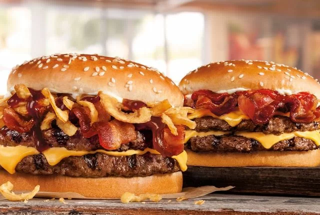

How to make a Steakouse Burger

This ground sirloin patty topped with roasted garlic mayo is a menu must-have. Learn how to master the recipe.
Ingredients:
- 2 eggs
- 1.2 kg (2 1/2 lb.) ground beef
- 30 mL (2 tbsp.) olive oil
- 450 g (1 lb.) portobello mushrooms, stems removed, thinly sliced
- 2 cloves garlic, minced
- 5 mL (1 tsp.) steak spice blend
- 1 mL (1/4 tsp.) each salt and pepper
- 15 mL (1 tbsp.) balsamic vinegar
- 8 burger buns
- 125 mL (1/2 cup) mayonnaise
- 125 mL (1/2 cup) ketchup
- 8 slices Swiss cheese
Steps to make it:
- In a bowl, combine eggs and beef. Season with salt and pepper.
- Shape beef mixture into eight patties. Let stand in the fridge for 10 minutes.
- Preheat barbecue to medium-high and oil grill. Grill patties for 6 to 8 minutes per side, or until a thermometer inserted in thickest part of patty reads 70°C (160°F).
- In the meantime, heat oil in a large skillet set over high heat. Add mushrooms, garlic, steak spice, salt, and pepper, and cook for 8 to 10 minutes, until mushrooms are golden and tender. Add balsamic vinegar and cook for another minute while stirring.
- Assemble burger patties in buns with mayonnaise, ketchup, cheese, and mushrooms.
Return to homepage